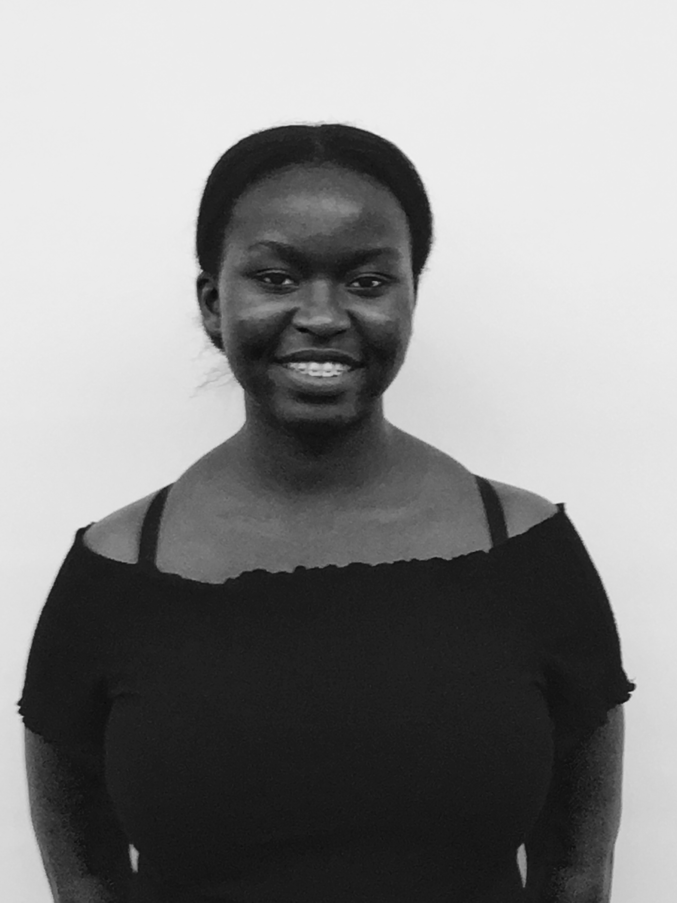
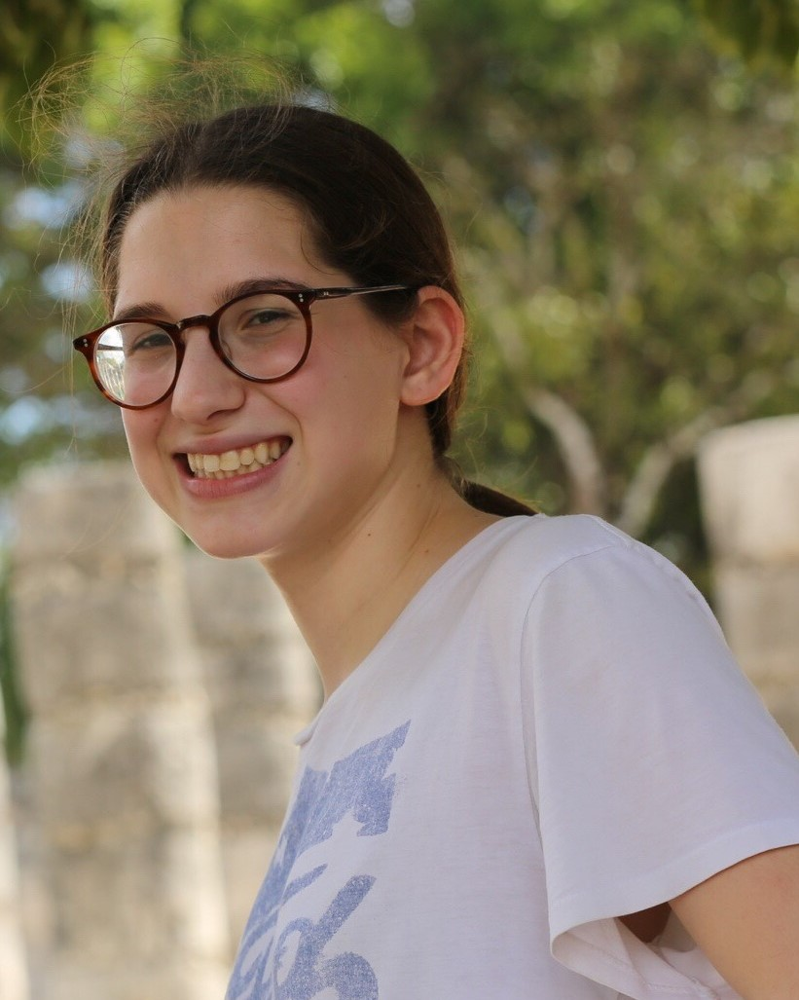

About Say Yes To CS

We are Say Yes To CS! We believe that learning computer science should be accessible to everyone. After participating in the Girls Who Code Summer Immersion Program, the team decided to create Say Yes To CS to make learning computer science fun, easy, and approachable. Through interactive tutorials, we help people understand and utilize code to create personalized websites. Together, we can all Say Yes To CS!
Our Team
Sarah Baum
Sarah Baum is a rising senior at the High School of American Studies at Lehman College. Her favorite subjects in school have always been in the humanities, but she felt intrigued by computer science, and was curious enough about it to participate in the Girls Who Code Summer Immersion Program. Sarah wanted to be a part of this project because she believes that technology is becoming more and more prevalent in our society, and everyone should have the resources to learn more about it.

Sophie Edelman
Et officiis phaedrum temporibus vel. Ut case ipsum vim, ad nec suas imperdiet evertitur. Ad nec esse homero, est melius nostrud aliquam ea, has dolor facete adversarium ad. Ea mel alienum moderatius, dicat referrentur his no. Mel mazim discere numquam in. Sint feugait accommodare sit ex. Impetus sanctus praesent ea pro, ex graeco verear consectetuer usu .Sea te solet tritani, cu habeo liber duo.

Aminata Jaiteh
Aminata Jaiteh a rising senior at Manhattan Hunter Science High School. From a young age she was always fascinated with computers.In high school she decided to take computer science classes and fell in love with it. She wanted to help create the website Say Yes To CS because she feels that everyone should get a chance to try coding no matter their age or gender.

Michelle Liang
Michelle Liang is a rising junior at Fox Lane High School. Her interest in computer science was fueled from her family’s talk about computer science and coding. Michelle wanted to join Girls Who Code Summer Immersion Program in order to immerse herself in the world of technology to have a better understanding on where all the apps, websites, and technology in her life came from. Michelle wanted to join the Say Yes To CS project because of her realization of the overwhelming number of people that don’t know where all the technology they use comes from.
